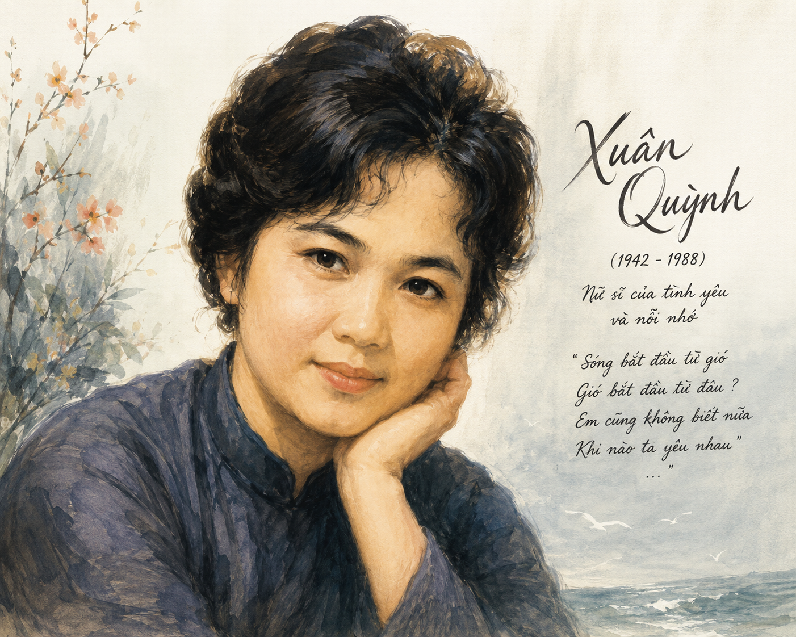

- Bạn đã biết những so sánh thú vị nào về tình yêu và về sự gắn kết giữa những người yêu nhau?
- Bạn đã từng nghe những ca khúc nào phổ thơ Xuân Quỳnh? Nếu đã từng nghe, hãy chia sẻ ấn tượng của bạn về một trong số ca khúc ấy.
I TRUYỆN THƠ TRỮ TÌNH VÀ TÁC PHẨM "THUYỀN VÀ BIỂN"
Em sẽ kể anh nghe
Chuyện con thuyền và biển:
“Từ ngày nào chẳng biết
Thuyền nghe lời biển khơi
Cánh hải âu, sóng biếc
Đưa thuyền đi muôn nơi
Lòng thuyền nhiều khát vọng
Và tình biển bao la
Thuyền đi hoài không mỏi
Biển vẫn xa... còn xa
Những đêm trăng hiền từ
Biển như cô gái nhỏ
Thầm thì gửi tâm tư
Quanh mạn thuyền sóng vỗ
Cũng có khi vô cớ
Biển ào ạt xô thuyền
(Vì tình yêu muôn thuở
Có bao giờ đứng yên?)
Chỉ có thuyền mới hiểu
Biển mênh mông nhường nào
Chỉ có biển mới biết
Thuyền đi đâu, về đâu
Những ngày không gặp nhau
Biển bạc đầu thương nhớ
Những ngày không gặp nhau
Lòng thuyền đau - rạn vỡ
Nếu từ giã thuyền rồi
Biển chỉ còn sóng gió
Nếu phải cách xa anh
Em chỉ còn bão tố.
(Xuân Quỳnh, Không bao giờ là cuối, NXB Hội Nhà văn, 2011)
📌 Dấu hiệu tự sự:
Những dấu hiệu hình thức nào chứng tỏ có một câu chuyện được kể trong bài thơ?
🔍 Theo dõi:
Theo dõi diễn biến câu chuyện tình yêu giữa Thuyền và Biển.
💭 Chú ý:
Chú ý dấu ngoặc đơn ở hai dòng thơ "(Vì tình yêu muôn thuở / Có bao giờ đứng yên?)"
💡 Nhận thức & Đồng nhất:
Nhân vật trữ tình rút ra nhận thức gì và chuyển đổi từ hình tượng ẩn dụ sang trực tiếp như thế nào?

Tác giả Xuân Quỳnh (1942 – 1988)
Tên khai sinh: Nguyễn Thị Xuân Quỳnh, quê ở quận Hà Đông, thành phố Hà Nội.
Sáng tác của bà bao gồm cả thơ và văn xuôi, viết về nhiều đề tài khác nhau, trong đó tình yêu, hạnh phúc gia đình và trẻ em là các đề tài chiếm vị trí nổi bật.
Tác phẩm chính: Tơ tằm – Chồi biên (1963), Hoa dọc chiến hào (1968), Gió Lào cát trắng (1974), Tự hát (1984), Hoa cỏ may (1989)...
II SUY NGẪM VÀ PHẢN HỒI (CÂU HỎI BÀI HỌC)
Câu chuyện giữa Thuyền và Biển là một ẩn dụ nghệ thuật tinh tế về tình yêu đôi lứa. Đó là một hành trình cảm xúc trọn vẹn: từ sự quyến rũ, gặp gỡ ban đầu đến sự hòa hợp sâu sắc, trải qua những biến động, hờn ghen vô cớ, và cuối cùng khẳng định sự gắn kết sinh mệnh—thiếu nhau thì chỉ còn bão tố và rạn vỡ.
- Tương quan: Tương quan song hành, khăng khít, vừa chủ động vừa thụ động (Thuyền đi xa trên biển; Biển bao la ôm trọn thuyền).
- Cung bậc tình cảm:
- Sự lắng nghe, quyến rũ ("Thuyền nghe lời biển khơi").
- Sự khao khát và êm đềm ("Nhưng đêm trăng hiền từ / Biển như cô gái nhỏ").
- Sự giận hờn, xáo động vô cớ ("Cũng có khi vô cớ / Biển ào ạt xô thuyền").
- Nỗi đau và sự trống trắc khi xa cách ("Lòng thuyền đau - rạn vỡ").
- "Hiểu" và "Biết": Là sự thấu cảm tuyệt đối giữa hai tâm hồn ("Chỉ có thuyền mới hiểu... Chỉ có biển mới biết"). Tình yêu chân chính đòi hỏi sự thấu hiểu từ những điều riêng tư, sâu kín nhất.
- "Gặp": Không chỉ là sự hiện diện thể xác mà là sự đồng điệu tâm hồn. Khi "không gặp nhau", sự trống trải biến thành nỗi đau rạn vỡ.
- Tỉ lệ phân bổ: 28 dòng thơ đầu (7 khổ) kể về câu chuyện Thuyền và Biển (chiếm ~87.5%). 4 dòng thơ cuối (1 khổ) trực tiếp là câu chuyện của "Anh và Em" (chiếm ~12.5%).
- Nhận xét: Sự lồng ghép từ rộng đến hẹp, từ hình tượng nghệ thuật đến đời thực tạo nên hiệu ứng dồn nén cảm xúc. Khổ cuối bộc lộ trực tiếp cái "mình" trữ tình, làm cho tính triết lý trở nên ấm nóng hơi thở đời sống.
- Khát vọng: Khao khát một tình yêu chân thành, thuỷ chung, sâu sắc và mãnh liệt. Đồng thời mang những lo âu về sự mong manh của hạnh phúc.
- Vai trò của yếu tố tự sự: Yếu tố tự sự đóng vai trò xương sống cho cấu trúc bài thơ, giúp cảm xúc trữ tình có điểm tựa vững chắc để bộc lộ một cách tự nhiên, sinh động và giàu sức gợi cảm.
III THỰC HÀNH TIẾNG VIỆT: LỖI VỀ THÀNH PHẦN CÂU VÀ CÁCH SỬA
📘 KIẾN THỨC NỀN TẢNG (ĐÓNG KHUNG TÓM TẮT)
1. Thiếu thành phần nòng cốt: Câu thiếu Chủ ngữ (CN), thiếu Vị ngữ (VN) hoặc thiếu cả CN lẫn VN do nhầm thành phần phụ (như Trạng ngữ) là nòng cốt câu.
2. Cách sửa lỗi:
- Thêm thành phần nòng cốt còn thiếu.
- Biến đổi thành phần phụ (Trạng ngữ, Định ngữ...) thành Chủ ngữ hoặc Vị ngữ phù hợp với ngữ cảnh.
⚠️ Nhận diện lỗi: Nhầm trạng ngữ "Với tác phẩm này" làm chủ ngữ ➔ Câu thiếu Chủ ngữ.
Cách sửa 1 (Bỏ giới từ "Với"): "Tác phẩm này đã thể hiện tài năng của một cây bút truyện ngắn bậc thầy."
Cách sửa 2 (Bổ sung Chủ ngữ): "Với tác phẩm này, nhà văn đã thể hiện tài năng của một cây bút truyện ngắn bậc thầy."
✨ EM CÓ BIẾT
Bài thơ Thuyền và biển được nhạc sĩ Phan Huỳnh Điểu phổ nhạc thành bài hát cùng tên rất nổi tiếng. Những giai điệu da diết đã làm cho ý thơ của Xuân Quỳnh lan tỏa sâu rộng trong lòng nhiều thế hệ yêu nhạc và thơ Việt Nam.
🚀 EM CÓ THỂ
Viết một đoạn văn ngắn (khoảng 150 chữ) chia sẻ cảm nhận của em về bài thơ hoặc tự vẽ một bức tranh minh họa ẩn dụ cho hình tượng Thuyền và Biển theo góc nhìn nghệ thuật cá nhân.
⚠️ LƯU Ý
Khi phân tích thơ trữ tình có yếu tố tự sự, không được sa đà vào việc kể lại cốt chuyện mà phải tập trung làm rõ yếu tố tự sự ấy đã góp phần bộc lộ cảm xúc, tâm trạng của nhân vật trữ tình như thế nào.
🏆 AI LÀ TRIỆU PHÚ KHIẾN BẠN HIỂU BÀI 🏆
Trả lời 10 câu hỏi trắc nghiệm dưới đây để chinh phục đỉnh cao tri thức!
IV BÀI TẬP TỰ LUẬN CỦNG CỐ
Hãy chỉ ra sự dịch chuyển không gian và thời gian trong bài thơ Thuyền và biển và phân tích tác dụng của sự dịch chuyển đó.
- Thời gian: Dịch chuyển từ quá khứ ("Từ ngày nào chẳng biết"), sang những khoảnh khắc cụ thể ("Những đêm trăng hiền từ", "Cũng có khi vô cớ", "Những ngày không gặp nhau"), và hướng đến tương lai ("Nếu từ giã... Nếu phải cách xa...").
- Không gian: Từ không gian mở mênh mông ("biển khơi", "muôn nơi") thu nhỏ lại không gian cận cảnh ("quanh mạn thuyền") và cuối cùng là không gian tâm tưởng của "Anh" và "Em".
- Tác dụng: Bộc lộ sự vĩnh cửu của tình yêu, biến đổi liên tục nhưng luôn bền chặt theo thời gian và không gian.
Phát hiện lỗi và sửa lại cho đúng câu sau: "Qua bài thơ Thuyền và biển của Xuân Quỳnh cho ta thấy khát vọng tình yêu chân thành của người phụ nữ."
- Phát hiện lỗi: Câu mắc lỗi thiếu Chủ ngữ do nhầm cụm giới từ "Qua bài thơ..." làm chủ ngữ.
- Cách sửa 1: Bỏ từ "Qua": "Bài thơ Thuyền và biển của Xuân Quỳnh cho ta thấy khát vọng tình yêu chân thành của người phụ nữ."
- Cách sửa 2: Thêm chủ ngữ "người đọc": "Qua bài thơ Thuyền và biển của Xuân Quỳnh, người đọc thấy được khát vọng tình yêu chân thành của người phụ nữ."
Bài thơ gồm 8 khổ, mỗi khổ 4 câu (tổng 32 câu). Tính phần trăm số câu thơ dành riêng cho hình tượng Thuyền - Biển và phần trăm số câu dành riêng cho xưng hô Anh - Em. Rút ra nhận xét nghệ thuật.
Lời giải chi tiết & Tính toán:
1. Tổng số câu thơ: \( N = 32 \) câu.
2. Số câu thơ Thuyền - Biển (7 khổ đầu): \( N_1 = 7 \times 4 = 28 \) câu.
➔ Tỉ lệ phần trăm Thuyền - Biển: \( P_1 = \frac{28}{32} \times 100\% = 87.5\% \)
3. Số câu thơ xưng hô Anh - Em (Khổ cuối): \( N_2 = 1 \times 4 = 4 \) câu.
➔ Tỉ lệ phần trăm Anh - Em: \( P_2 = \frac{4}{32} \times 100\% = 12.5\% \)
Nhận xét: Sự phân bổ 87.5% cho ẩn dụ nghệ thuật tạo nên bước đệm tâm lý vững chắc, giúp cho 12.5% sự bùng nổ cảm xúc thực ở cuối bài thơ đạt tới đỉnh cao biểu cảm.